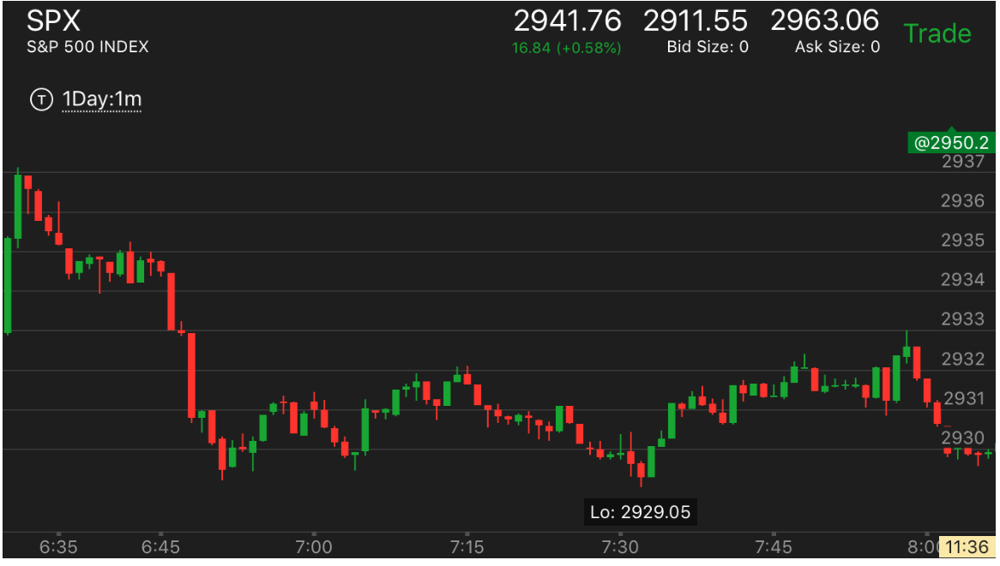
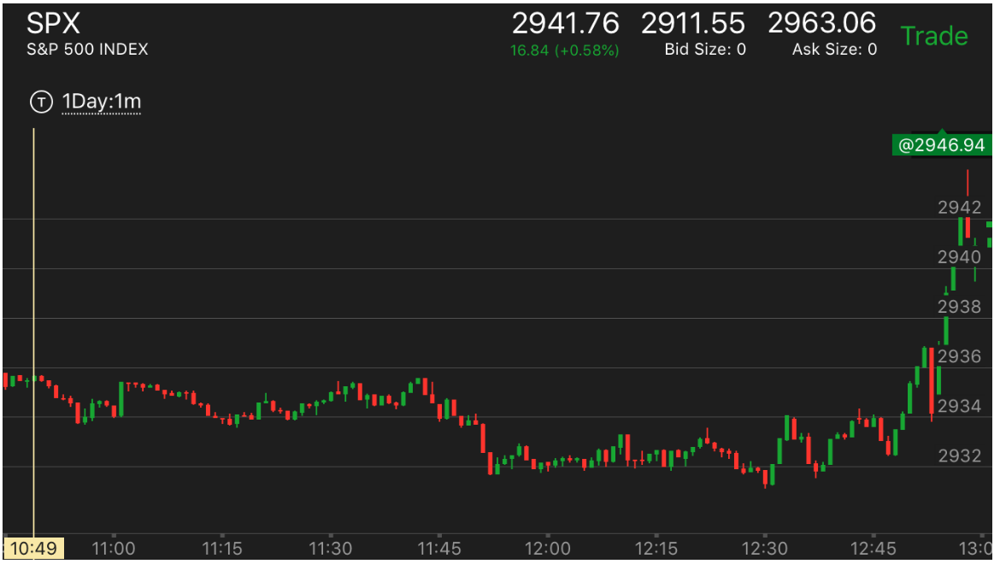
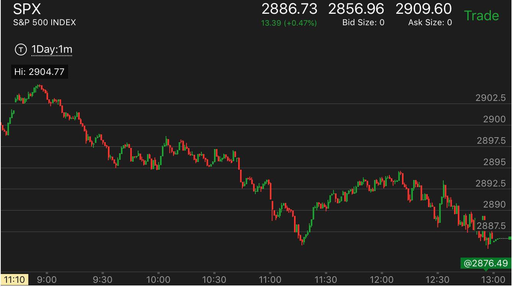
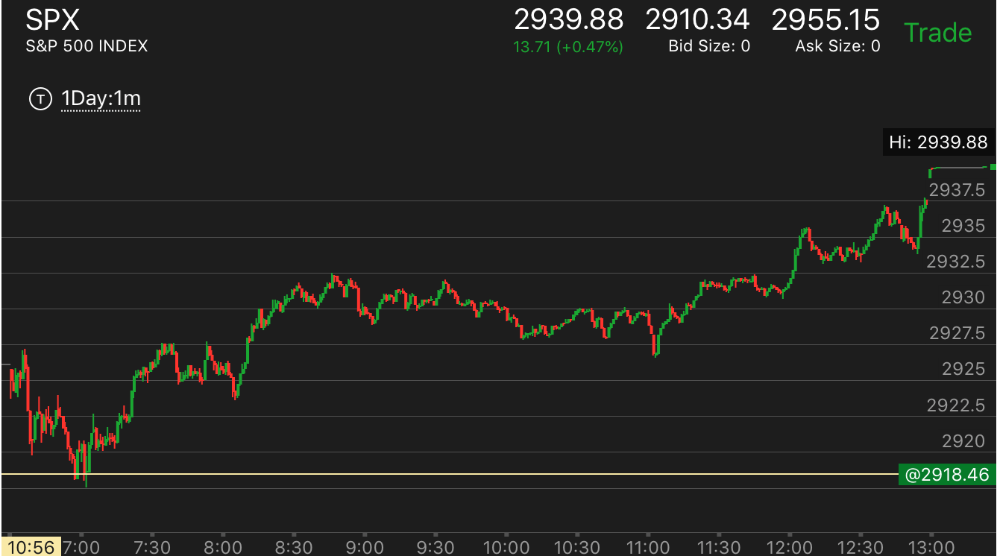
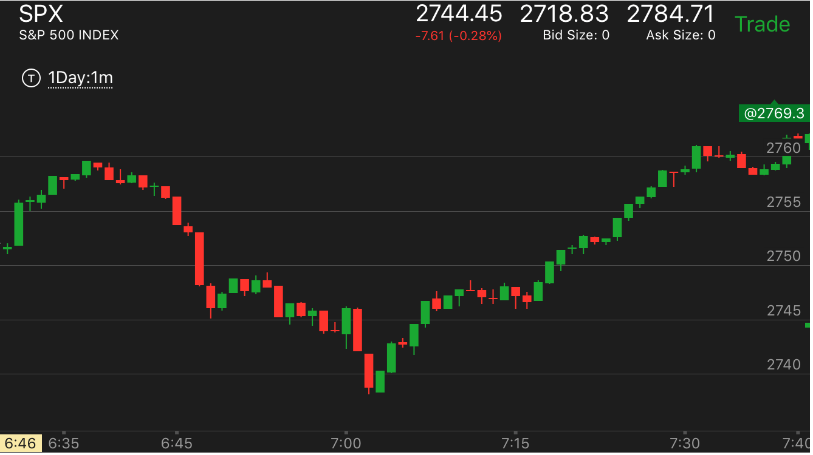
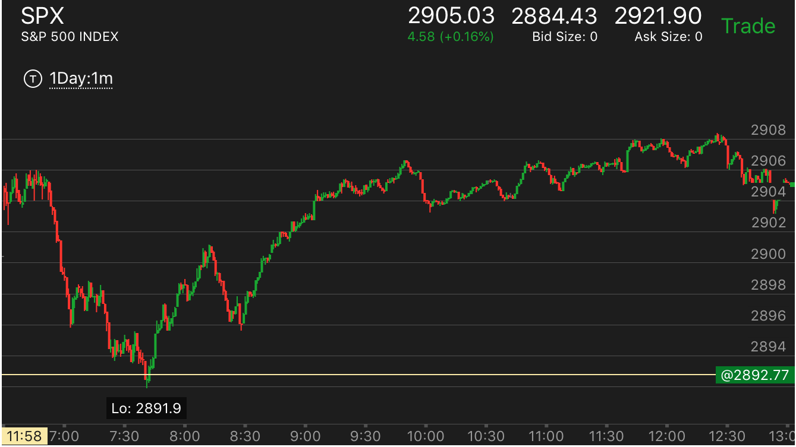
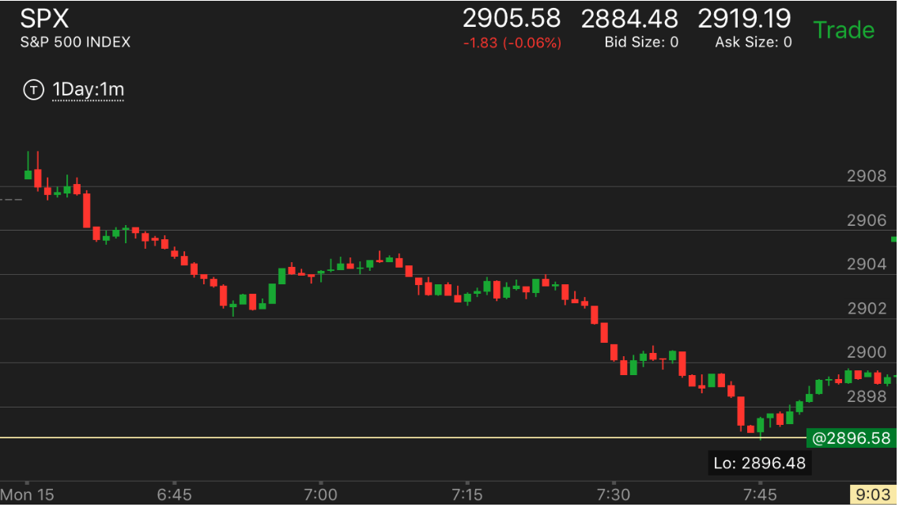
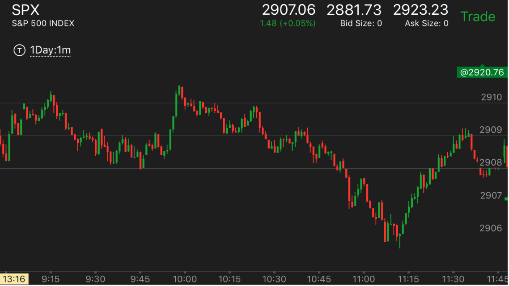

三段走势转折
- 三段走势，从另外一个角度看，就是5浪走势。以下跌为例。第一浪下跌，然后反弹是第二浪，有时候，反弹会完全回到原位，
然后再次下跌，是第三浪。然后走平。这是第四浪。最后快速下跌。这个是5浪。走势结束了。这样的走势结束，常常意味着反转。
但是也要看反转的情况和更大走势的情况。
- 如果出现了两段转折，那么不一定是真实反转，要看反弹的情况和下跌的状况
- 如果出现了三段转折，那么反转的概率很大。如果三段转折有一段没有填补真空，而且反弹的时候，它的第一段反弹不高于最后一段下跌。那么就是真的反转了。
- 如果三段运动，每一段都填补了真空，而且都在反弹前都很缓慢，而且每段幅度都不大。那么这个走势会持续运动。
大跌后，快速反弹走势的对比
下跌的时候出现了一个或者多个转折
下跌的第一浪出现了深井走势，全面反弹后，出现了两段下跌后，结束下跌
前面出现两段上涨，本来应该下跌。结果下跌的时候出现了三段下跌，反而反弹
上涨和下跌都出现了多个转折而反转
第二段下跌出现了三个转折
更大走势出现转折后，产生三段转折反转
更大走势出现转折后，产生三段转折反转:
TOP

图示：开盘后下跌，走平后，继续下跌。可以看到第二段下跌更加激烈。
但是大盘并没有立刻反转，而是来回震荡。在7：15，它从高处下来，7:25,出现了也给大的反弹，再次下跌。
可以看到这次下跌，它直接越过了反弹的低点，并且在更低的地方停留几分钟。这个其实已经具备了反弹的基础。
但是在7：28停留的地方，是前面7：05开始涨的位置，这个涨的时间比下跌的时间要短，说明下跌一定要
比它更低才可以。这样它在7：30下跌，出现了新低。这样才开始转折，上涨了。

图示：11:00出现了一个比较大的bar。11：40开始下跌的时候，是连续
三个小的bar，然后停留，根据相对论，它一定会低于2934这个点的。它走平后，快速下跌。这个
就是一个三段下跌走势。11：50这个其实已经反转了。但是它在底部没有立刻反转。而是再次出现了一个三段走势。
12：10它快速下跌。然后12：20拉回全部跌幅，再次缓慢下跌。这样根据相对论。它会低于2932这个点。
它走平后，再次下跌。这样三段结束了。它快速反弹。开始了升势。
第二段下跌出现了三个转折:
TOP

图示：9:00开始下跌。结果它下跌后，走平震荡很久。然后再次下跌。10：40第一次下跌。幅度其实不大。和第一阶段相比。所以不能是底部。
它再次回调后，再次下跌。出现了三个底部。11：20就是底部了。结果它反弹的第一浪很大，然后没有回调，继续上涨。这样难以持续。再次下跌。
上涨和下跌都出现了多个转折而反转:
TOP

图示：开盘出现弱一浪走势，然后上升，说明是个很强的涨势。
1. 11:30出现了下跌，反弹再次下跌，走平后，再次下跌的走势。这个就是一个三段转折。它12：00开始反弹的时候，速度很慢，说明这个是真的升势。
2. 1：30出现了上涨，拉回，2：00再次上涨，没有拉回，继续上涨。这样就到达了顶部。它在顶部立刻拉回。直到后来，才停留在顶部几分钟，表示了一个真的顶部。
下跌的第一浪出现了深井走势，全面反弹后，出现了两段下跌后，结束下跌:
TOP

图示:7:40出现下跌，然后走平。反弹很小。7：50快速反弹。然后立刻下跌。出现了两段下跌走势后，结束。
这个其实是个三段下跌走势。深井可以看作是下跌的第一浪。只是全面回调了。
前面出现两段上涨，本来应该下跌。结果下跌的时候出现了三段下跌，反而反弹:
TOP

图示：9:00在两段上涨走势后，应该下跌。但是它下跌的形状比较特别。从最高点开始，它出现了三个台阶。第三个台阶加速下跌。
这样说明要反弹。它开始缓慢的反弹。一直没有超过第一个台阶。说明未来一定会反弹的。11：00快速大涨，回到高位。这个才是真的顶部。
下跌的时候出现了一个或者多个转折。:
TOP
如果只有一个转折，那么这个转折是否是真的转势，要看第二段走势是否激烈，也看反向走势的样子。
如果有一个以上的转折，那么这个转折就是真的转折了。它起码会反转开始的部分。然后看情况。

图示：开盘后，冲高，下跌，稍微反弹后，下来，走平，再次下跌。这样就成了多个转折。要想到，冲高下跌的时候，下跌是第一浪，
所以下跌后，不能是底部。它后来稍微反弹后，出现了走平，再次下跌。这样才是底部。

图示：10:35出现了几段转折走势。而且它在10：30加速下跌。说明要转折了。但是它从最低点开始。很快就上涨。
而且出现了两段走势。而两段走势恰好到了前面下跌的高点。这个结合起来。说明大盘很可能会继续下跌。这也说明，几段转折不一定是完全转折的走势.
特别是跌势的情况。不一定就是转折了。可能是填补真空后，继续跌。

图示：7:20开始的下跌，从更大的规模看，它出现了三次转折。7：50第一次，
8：20第二次。8：45第三次。而且第二次反弹很小。没有填补真空。而且它后面跌的更厉害。说明不能提前操作。
因为后面跌的也会很深。

图示：开盘后不断冲高，10：00开始下跌。可以看到它下跌前很平稳。所以不一定是顶部。而它开始下跌的时候，
很快就出现了三个转折。最后一个转折最大。立刻反转大涨。说明这个下跌是个填补真空的走势。

图示：开盘后，出现两段下跌后，第一浪上涨幅度很大。然后走平。再次上涨，下来。可以看到这个是两浪走势。
但是它在高处停留时机很短。而且7：10开始的下跌速度很快。很快就超过了走平的地方。说明前面不是顶部。未来一定会超过它。它在2902附近走平很久后，
再次上涨。每次上涨都是跨越上涨。直到8：30，它没有回调，直接上涨。这样就是一个顶部了。它很快就下来了。说明未来还会超过这个点。

图示：开盘出现了两段上涨后，第一浪下跌幅度很大，走平后，再次下跌。再次走平后，再次下跌。这样就出现了两个转折。
它会反转至少到下跌开始的地方。2906. 9：40它到了2906后，很快就下来了。说明未来会超过这个点。

图示：
7：50大跌的开始，它出现了三个转折。这样就是底部了。虽然总的下跌幅度不大。
但是它转折很多。这样给人一个源源不断的感觉。它最后一个转折是走平后下跌。
为什么7：00的下跌不是一个底部呢？和开盘后第二分钟的下跌比较。它一点也不够激烈。而且在底部停留时间很短。
要当底部有应该具备两个条件之一，在底部停留时间长，或者反弹很慢，或者下跌时候，激烈程度超过第一浪，7：50的下跌，虽然不够激烈，但是它在底部停留时间长，
反弹也很慢。

图示： 6：45开始下跌。它的下跌也是出现了三个转折。第一转折是反弹向上，
第二个转折则是走平后，下跌。这样就是一个底部了。

图示： 开盘6：40的时候，它的下跌，立刻反弹虽然幅度不大。这样的走势不是要给底部的样子。底部应该是走平，走低。
拉回。7：20开始的下跌。出现出现了两个转折，而且相隔时间很短。这个就是一种加速。这样就是一个底部了。

图示： 10：40开始下跌。它下跌的时候不断的反弹和回调。这样就预示着要见底。11：00它下跌加速。这样就是底部了。

图示：开盘出现两段上涨后，稍微走低后，走平。这样意味着大跌。它先是大跌，然后震荡。
11：00开始第二段下跌。这个下跌转折了三次。这样就是底部了。11：20反弹后，它反弹的第一浪低于最后一个转折点，
就开始震荡。这样意味真正的升势开始了。

图示：10：20开始下跌.下跌的时候出现了三个转折点。最后加速下跌。说明就是底部了。
它的反弹一开始也很慢。说明要涨。

图示：11：00开始的下跌。是一个两段走势。
它下跌的时候，没有加速。说明未来会继续跌。但是因为反弹很小。要先涨一次。它反弹到了和下跌点一样高的地方后，
大跌。

图示：开盘后，走平。然后出现两段下跌走势。11：00出现了幅度不大，但是
形状很激烈的两段下跌走势。说明这个就是底部了。
大跌后，快速反弹走势的对比:
TOP
1. 关键在于是否见底。而下跌期间，出现两个以上的反弹，就是属于底部加速，那么就是见底了。

图示：下跌前，有个冲高的动作。这样的下跌会持续前进。10：30下跌后，
只有一个走平。它反弹的时候，第一浪就速度很快，而且幅度超过了第一个台阶，
而且后面一直在这个高点徘徊。如果它回撤，那么这个会涨。而这个没有回撤。而是在高点徘徊。

图示：这个下跌前，没有明显的冲高。10：20只有很小的冲高的动作，10：50它大跌。基本就是一个走平的走势后，突然大跌。
这样类似陷阱大跌。
看它下跌的样子。出现了走低，反弹不到高点，再次走低。
而且连续两次。最后一次还出现了加速。这样就是一个底部了。它反弹的时候，第一浪看起来很快，但是和第一个台阶一样高，然后走平。后来走平很久。这样平均来看
速度很慢。最后会大涨。